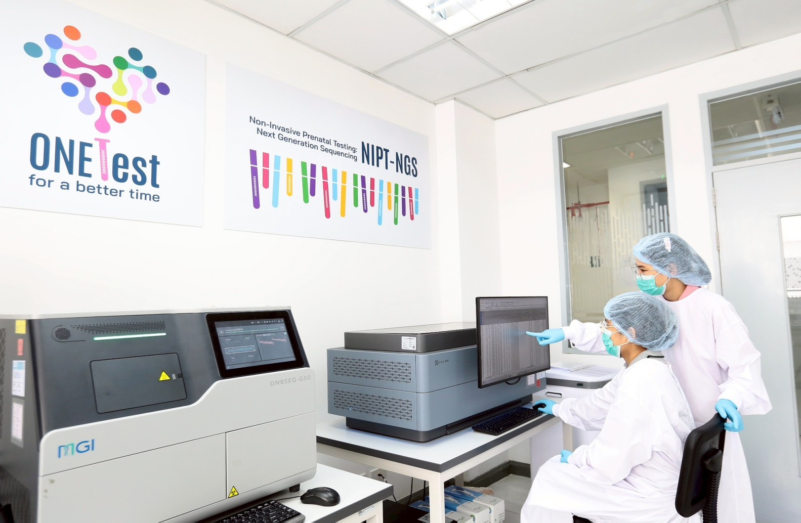
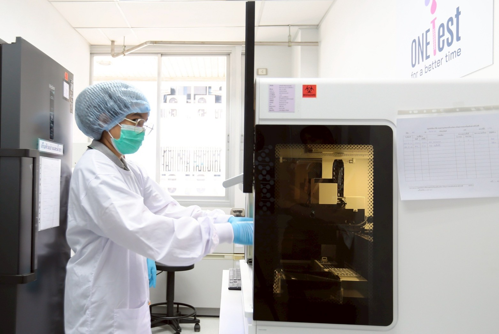

เกี่ยวกับหน่วยงาน
ศูนย์การแพทย์จีโนมิกส์ สถาบันชีววิทยาศาสตร์ทางการแพทย์ เป็นหน่วยงานภายในกรมวิทยาศาสตร์การแพทย์ มีภารกิจในการขับเคลื่อนแผนปฏิบัติการบูรณาการจีโนมิกส์ประเทศไทยตามนโยบายกระทรวงสาธารณสุข ศึกษาวิจัยและเปิดบริการเพื่อพัฒนางานด้าน Precision Medicine ด้านเภสัชพันธุศาสตร์ (Pharmacogenomics) ปฏิสัมพันธ์ของเจ้าบ้านและเชื้อก่อโรค (Host-Pathogen Interaction) โรคมะเร็ง โรคหายาก โรคพันธุกรรม และด้านอื่น ๆ จัดทํา National Genome Database เพื่อรวบรวมข้อมูลทางพันธุศาสตร์ของประเทศ และใช้ระบบชีวสารสนเทศเพื่อวิเคราะห์ผลการศึกษาวิจัยและการจัดระบบข้อมูลการศึกษาด้านพันธุศาสตร์ และยังเป็นศูนย์ทรัพยากรชีวภาพในการจัดเก็บทรัพยากรชีวภาพที่ได้มาตรฐาน ISO 20387 ของกรมวิทยาศาสตร์การแพทย์

